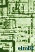
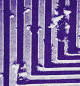
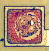
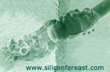

Corrosion
is the degradation of metals as a result of
electrochemical
activity.
The process of corrosion requires 4 components for it to occur: 1)
an anode; 2) a cathode; 3) an electrolyte; and 4) electrical connection
between the anode and the cathode. Thus, the key to corrosion
prevention is the elimination of at least one of these components. The
presence of an anode and a cathode implies that there is a
potential
difference
between them, i.e., the anode has a greater tendency to lose electrons
while a cathode has a greater tendency to gain them. The presence
of this potential difference is the primary driver of corrosion.
The
anode
is the metal or site with a higher
potential
to oxidize
(lose electrons). Thus, a metal
undergoing corrosion is said to be
'anodic'
if it is where the oxidation reaction takes place:
M → Mx+ + xe-
. The anode is often one of the following:
1) the
more active metal;
2) a
stressed region such as a crack, a scratch, a grain boundary, or a
deformed structure;
3) an
area that is starved of oxygen; and
4) an
area with variations in its composition.
The
cathode
is the metal or site with a higher
potential for reduction (gaining of
electrons), or lower tendency to oxidize. It is often one of the
following:
1) a noble
metal;
2) an
unstressed region;
3) an area
with high oxygen concentration; and
4) a
non-metallic component.
The
electrolyte
is the medium through which ions may move, the most common of which
is water.
Die Corrosion
Die corrosion
refers to the corrosion of the metal areas on the surface of the die.
Aluminum (Al) metal areas are the most prevalent on a typical die
circuit, so Al corrosion is

quite
commonly encountered. Other
thin-film layers on the die such as sichrome resistors can also corrode.
Gross cases of chemical corrosion can lead to either electrically open
or electrically shorted metal lines, with the latter being due to
corrosion byproducts that can bridge two metal lines together.
Corroded metal lines appear dark under an optical microscope (as shown
in the picture on the right).
Chemical
corrosion of Al is triggered by the presence of
moisture
and
contaminants
on the die surface. Corrosion of
Al
can occur
whether it is acting as an
anode
or as a
cathode.
Al
bond pads, being unglassivated, are more vulnerable to corrosion.
However, corrosion can also occur in subsurface Al lines that are
accessible to moisture by imperfections in its protective glassivation
or inter-metal dielectric layers.
Corrosion is
often a result of many wafer fab or packaging contamination problems.
Improper rinsing or excessive use of corrosive contaminants such
as P, S, and Cl during wafer fab can make the die highly susceptible to
die corrosion. Packaging
and passivation defects that allow excessive ingress of moisture and
contaminants into the die can also lead to die corrosion. The
use of plastic molding compounds with corrosive ingredients and the
use of die attach material that exhibits resin bleeding of corrosive
contaminants may likewise trigger die corrosion.
|
 |
 |
|
Fig 1. SEM
photo of corroded aluminum metal lines |
Fig 2. Photo
of a corroded bond pad that exhibited ball lifting; this corrosion was
caused by Cl contamination |
Lead/Leadframe
Corrosion
Lead
corrosion, as the name implies, refers to the corrosion of the lead
itself. Lead corrosion is often due to inadequate lead finish, the
presence of contaminants on the leads, and exposure of the leads to
excessive moisture. It can
be accelerated by higher temperatures and the presence of electrical
bias on the leads.
Leadframe corrosion refers
to the corrosion of any part of the leadframe. Although this mechanism
becomes more critical if it occurs on the silver-plated areas (die pad where
the die is set and the bonding fingers) of the leadframe, corrosion on
any part of the leadframe must be rejected because the contaminants in
the corroded area can easily spread in the presence of moisture.
The most frequently
encountered contaminants in fresh leadframes are chlorine, phosphorus, sulfur,
and potassium. Newly-delivered leadframes from suppliers must undergo strict incoming
quality screening for contaminants/foreign materials to minimize the
risk of internal corrosion in semiconductor products.
|
|
|
Fig 3. SEM photos
of corroded areas on contaminated die pads of various leadframes |
Wire
Corrosion
Corrosion of
the bond wires within a package can also occur, gross cases of which can
lead to wire breaking or even total disintegration of the wire. This
mechanism is more commonly encountered in aluminum wires that have been
contaminated by chlorine, although rare cases involving gold wires have
also be observed.
In the case of gold wires, delaminated areas
around the wire can act as conduit of Cl-contaminated moisture that can
expose the entire length of the wire to Cl and make it vulnerable to
massive corrosion. Other contaminants that accelerate gold wire
corrosion include bromide, iodide, and cyanide ions.
|
 |
|
Fig 4. SEM photo
of a corroded aluminum wire and wedge bond |
See Also:
Oxidation/Reduction Potential Values; Package
Failures; Die Failures;
Failure
Analysis; Basic FA
Flows;
Reliability Models
HOME
Copyright
©
2004-2005
www.EESemi.com.
All Rights Reserved.